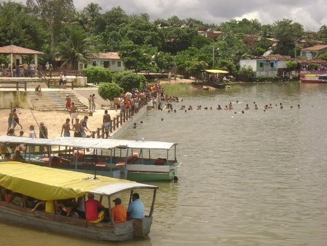
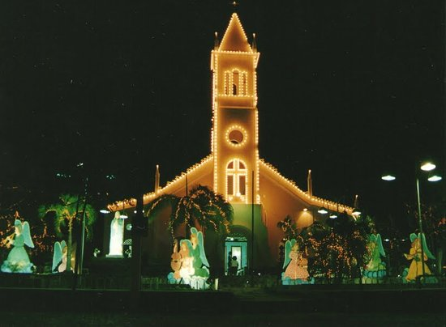

Geoinfos
Informações técnicas sobre relevo, população, IDH etc.
| INFORMAÇÕES | |
|---|---|
| Municípios limítrofes | Norte: Umirim, São Luís do Curu e São Gonçalo do Amarante; Sul: Caridade; Leste: Caucaia e Maranguape; Oeste: Aquiarés e Itapajé |
| Fundação | 23 de agosto de 1873 (147 anos) |
| Área total | 1 378,295 km² |
| Clima | semiárido |
| IDH | 0,635 — médio |
| PIB | R$ 127 855,052 mil |
| INFORMAÇÕES TERRITORIAIS | |
|---|---|
| Número de habitantes | 37 751 habitantes |
| Superfície de Pentecoste |
137 830 hectares
1378,30 km² (532,16 sq mi) |
| Densidade populacional | 27,4 ha./km² |
| Altitude de Pentecoste | 71 metros de altitude |
| Coordenadas geográficas decimais |
Latitude:
-3.79149
Longitude: -39.2661 |
| Coordenadas geográficas sexagesimais | Latitude: 3° 47' 29'' Sul , Longitude: 39° 15' 58'' Oeste |
| INFORMAÇÕES DO MUNICÍPIO | |
|---|---|
| Endereço da Prefeitura Municipal de Pentecoste |
Pentecoste
Prefeitura de PENTECOSTE
Pça. Bernardino Gomes Bezerra, 457 - Matriz PENTECOSTE - CE, 62640-000 Brasil Work +55 85 3352-2617 Fax Não disponível. |
| Telefone da prefeitura |
(85) 3352-2617
Internacional: +55 85 3352-2617 |
| Fax |
Não disponível.
Internacional: Não disponível. |
| Endereço electrónicoda prefeitura |
prefeiturapentecoste@yahoo.com.br
|
| Site oficial do município | pentecoste.ce.gov.br |
| INFORMAÇÕES DO ADMINISTRATIVAS | ||
|---|---|---|
| Prefeito de Pentecoste | JOÃO BOSCO PESSOA TABOSA | |
| Partido politico | PDT | |
| INFORMAÇÕES DE TRANSPORTE | |
|---|---|
| Transporte urbano disponível | - |
| Aeroporto |
Aeroporto Internacional Pinto Martins
81.5 km
Aeroporto de Sobral
119.7 km
Aeroporto Pinto Martins
201.3 km
|
| INFORMAÇÕES DE DISTÂNCIA A OUTRAS CIDADES | ||
|---|---|---|
| São Paulo : 2338 km | Rio de Janeiro : 2170 km | Brasília : 1637 km |
| Salvador : 1025 km | Belo Horizonte : 1855 km | Manaus : 2308 km |
| Curitiba : 2636 km | Fortaleza : 81 km mais perto | Goiânia : 1803 km |
| Belém : 1059 km | Porto Alegre : 3181 km | Guarulhos : 2317 km |
| Campinas : 2288 km | São Luís : 578 km | Recife : 679 km |
| Distância calculada em linha reta! | ||
Fonte: Wikipedia e Cidade Brasil
História
Conheça mais sobre a história de Pentecoste.
Os moradores, liderados por “mestre” Bernardino Gomes Bezerra, lançaram a pedra fundamental para construção de uma capela dedicada ao culto de Nossa Senhora da Conceição. Achando-se a povoação colocada a poucos metros da junção dos rios Canindé e Curu, deram-lhe o nome de “Barra da Conceição” ou Conceição da Barra”. Rezou a primeira missa naquelas paragens, no domingo de Pentecoste de 1864, o Padre Munuel Lima. Esse fato singular da vida Cristã naquela incipiente comunidade marcaria o início de sua gradativa emancipação, além de lhe conferir a bela denominação – Pentecoste -, perpetuando naquele rincão a memória da descida do Espírito Santo sobre os Apóstolos. (Gentílico: pentecostense)

Formação Administrativa:
Distrito criado com a denominação de Pentecoste, pela lei provincial ou Resolução Provincial nº 1283, de 29-09-1869. Elevado à categoria de vila com a denominação de Pentecoste, pela lei provincial nº 1542, de 23-08-1873, desmembrado de Canindé. Sede no núcleo de Pentecoste. Pelo decreto estadual nº 18, de 05-04-1892, a vila é extinta, sendo seu território anexado a vila de Canindé, como simples distrito.
Elevado novamente à categoria de vila com a denominação de Pentecoste, pela lei estadual nº 457, de 27-08-1898. Em divisão administrativa referente ao ano de 1911, a vila aparece constituídos de 2 distritos: Pentecoste e Jacu. Pelo decreto estadual nº 1893, de 20-05-1931, é extinta a vila de Pentecoste, sendo seu território anexado ao município de Arraial, como simples distrito. Em divisão administrativa referente ao ano de 1933, o distrito de Pentecoste figura no município de Arraial.
Elevado novamente à categoria de vila com a denominação de Pentecoste, pelo decreto nº 1540, de 03-05-1935. Desmembrado de Arraial. Constituído de 2 distritos: Pentecoste e Jacu, ambos desmembrados de Arraial. Em divisões territoriais datadas de 31-XII-1936 e 31-XII-1937, o município aparece constituído de 4 distritos: Pentecoste, Cruz do Matia, General Sampaio e Jacu.
Elevado definitivamente a condição de cidade com a denominação de Pentecoste, pelo decreto estadual nº 448, de 20-12-1938, sob o mesmo decreto o distrito de Cruz do Matias passou a denominar-se simplesmente Matias. Elevado definitivamente a condição No quadro fixado para vigorar no período de 1939-1943, o município é constituído de 4 distritos: Pentecoste, General Sampaio, Jacu e Matias ex-Cruz do Matias. Pelo decreto-lei estadual nº 1114, de 30-12-1943, o distrito de Jacu passou a denominar-se Apuiarés.
Em divisão territorial datada de 1-VII-1950, o município é constituído de 4 distritos: Pentecoste, Apuiarés ex-Jacú, General Sampaio e Matias. Assim permanecendo em divisão territorial datada de 1-VII-1955. Pela lei estadual nº 3338, de 15-09-1956 desmembra do município de Pentecoste os distritos de General Sampaio e Apuiarés, para formar no novo município de General Sampaio.
Em divisão territorial datada de 1-VII-1960, o município é constituído de 2 distritos: Pentecoste e Matias. Pela lei estadual nº 6419, de 07-07-1963, é criado o distrito de Serrota e anexado ao município de Pentecoste. Pela lei estadual nº 6569, de 18-09-1963, é criado o distrito de Porfírio Sampaio e anexado ao município de Pentecoste. Em divisão territorial datada de 31-XII-1963, o município é constituído de 4 distritos: Pentecoste e Matias, Porfírio Sampaio e Serrota. Pela lei estadual nº 7852, de 2-12-1964, o distritos de Serrota passou a denominar-se Sebastião de Abreu. Em divisão territorial datada de 31-XII-1968, o município é constituído de 4 distritos: Pentecoste e Maias, Porfírio Sampaio e Sebastião de Abreu ex-Serrota. Assim permanecendo em divisão territorial datada de 2005.
Fonte: IBGE
Pontos Turísticos
Saiba mais sobre os melhores lugares e o que fazer em Pentecoste.
Açude Pereira de Miranda - Pentecoste
Igreja Matriz Nossa Senhora da Conceição
Endereço: Praça Bernardino Gomes Bezerra, Pentecoste, Ceará 62640-000 Brasil
Como Chegar?
Veja como chegar nos melhores pontos de Pentecoste
SAIBA COMO CHEGAR EM PENTECOSTE-CE: